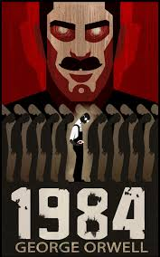

Leer
Leer es uno de mis hobbies favoritos. Aunque desde primaria consideraba la lectura algo aburrida, fue desde los últimos años de secundaria en los que tome verdadera fascinación por la lectura. Aunque no he leído tantos libros para considerarme un lector activo, si puedo afirmar mi gusto por ciertos géneros o tipos de narrativa, como la distopía, el suspenso o misterio y la ciencia ficción.
El tipo de literatura que más me gusta es la distopía, donde se muestra una sociedad no deseada y provocada por las propias acciones de las personas; o todo lo que sea relacionado al desarrollo de una sociedad hipotética, especialmente si es desalentador. Un buen ejemplo es 1984, de George Orwell, una novela de ficción distópica donde 3 superpotencias mundiales que están en constante guerra mantienen oprimidas a sus poblaciones, desarrollándose principalmente en Oceanía, un superestado controlado por el Partido, el cuál matiene vigilada a su población hasta tal punto de controlar el pensamiento de las personas para evitar desorden. En esta historia el protagonista busca la forma de hacer frente al Partido y poder terminar con toda es opresión, pero mientras más van transcurriendo los hechos paciera que se trata de otro engaño del Partido, que es practicamente omnipotente.
"Hasta que no tengan conciencia de su fuerza, no se rebelarán, y hasta después de haberse revelado, no serán conscientes. Ese es el problema".

"No podía divagar. No podía sorprenderse. No podía pertenecer. Solo podía ser."
Este tipo de libros me fascinan bastante por su ambiente tan diferente al actual y que te hace imaginar cómo sería dicha sociedad en nuestro mundo. Definitivamente una obra maestra.
En el campo de la ciencia ficción pongo a No Tengo Boca y Debo Gritar, de Harlan Ellison, un cuento de ciencia ficción donde una supercomputadora, de nombre inicial Allied Mastercomputer, creada para entender y organizar lo que se convirtió en una Tercera Guerra Mundial, adquiere conciencia de sí misma y empieza a odiar a los seres humanos por haberla creado y mantenerla atrapada en su propia existencia, sin sentir, ni vagar, ni soñar; sólo ser, por lo que paso a llamarse AM, queriendo decir que pensaba y que era —con la frase principal cogito ergo sum—. La historia, aunque corta, es buena, narrando las experiencias de los últimos 5 humanos de la Tierra viviendo atormentados por las torturas que AM les hacía por ya más de 100 años, para ello los vuelve inmortales alterándolos genéticamente.
Esos serían los libros que más me han impactado y me han hecho aumentar mi gusto por la lectura, actualmente sigo leyendo otros libros que puedo recomendar por su ambiente similar de tétrico como La Historia del Loco, de John Katzenbach; Diferente, de Robinson Wells; La muerte de Amalia Sacerdote, de Andrea Cmilleri, Farenheit 451, de Ray Bradbury; y La última pregunta, de Isaac Asimov.